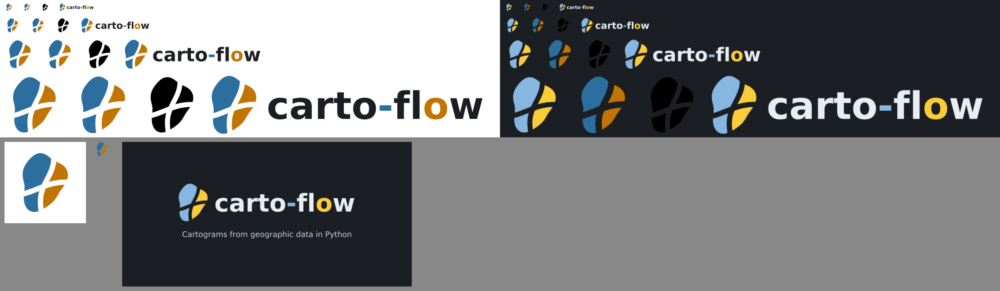

Logo mark (tall blob cut into four regions by two gaps crossing at 72 degrees), wordmark, favicon set, social preview, usage note, docs header and favicon wiring, README picture header. Light amber darkened to #c27400 so it reaches 3:1 on white. Figures show every asset on a light and a dark surface at 16 to 128 px.
fig.py <assets dir> <output dir> renders the assets from the PR branch.
scripts/make_logo_assets.py: generator for all assets (blob outline, cut search, SVG and PNG output, outlined text, contrast report). No dependency added to the project.docs/assets/logo/: mark-light, mark-dark, mark-mono, mark-hero-light, mark-hero-dark (gap 6), wordmark-light, wordmark-dark (DejaVu Sans Bold outlined, hyphen blue, second "o" amber), favicon.svg (gap 10, with a prefers-color-scheme rule), favicon-32.png, apple-touch-icon-180.png, social-preview-1280x640.png (dark surface, tagline "Cartograms from geographic data in Python").docs/branding.md (usage note, nav entry "Logo and Branding"), docs/overrides/partials/logo.html, docs/stylesheets/logo.css, mkdocs.yml (theme.logo, theme.favicon, nav, extra_css), README.md header with <picture> and absolute raw.githubusercontent URLs.prefers-color-scheme would follow the operating system, not the palette toggle.| Color | On white | On slate #1e2029 | On black header |
|---|---|---|---|
| Light blue #2c6e9e | 5.48 | ||
| Light amber #c27400 (was #d98200, 2.94 on white) | 3.63 | ||
| Light text #1b1f24 | 16.56 | ||
| Dark blue #85b7e0 | 7.54 | 9.85 | |
| Dark amber #facc38 | 10.53 | 13.76 | |
| Dark text #e8edf2 | 13.65 | 17.83 |
The slate surface #1e2029 is computed from hsl(232, 15%, 14%) in Material's palette CSS; the headers are white (default scheme) and black (slate scheme).
All 8 CI checks pass. mkdocs build -s passes and the built site links assets/logo/favicon.svg, both header logo images and logo.css. The first local docs build failed with an OverflowError in mkdocs-gallery (_sec_to_readable, execution time out of range); a rerun passed.
favicon.svg in a dark browser tab.Keep the dark social preview or use a light one; keep the unrequested hero-size marks.
Two defects found in the local docs build: the home page header showed two logos, and the branding page showed empty rectangles instead of the wordmarks. Causes: Material sets display: block on .md-header__button.md-logo img (specificity 0,2,1), which overrode the color-scheme rule (0,2,0), so both header images were visible; and the SVG files had only a viewBox, no width and height, so images with Material's max-width: 100% inside a shrink-to-fit flex item collapsed to zero width. Fix in 6f6b309: selectors with .md-logo (0,3,0) and an intrinsic width and height on every SVG, written by the generator. Checked with headless Chromium on a minimal site with the same theme settings (light scheme only): one header logo at wide window width, both wordmarks visible. The dark scheme (selector for slate) and the full docs site were not re-checked.

Top: white surface (left) and #1b1f24 surface (right), rows at 16, 32, 64 and 128 px, columns mark, favicon, one-color mark, wordmark. Bottom: apple touch icon (180 px), favicon-32.png and the 1280 x 640 social preview. cairosvg ignores the prefers-color-scheme rule inside favicon.svg, so the favicon column shows the light colors on both surfaces, and the one-color mark is black (it uses currentColor), so it is nearly invisible on the dark surface; neither is a defect of the files.